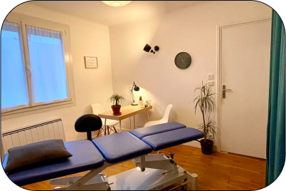
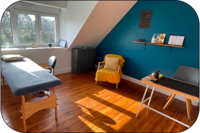
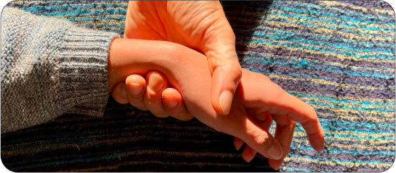
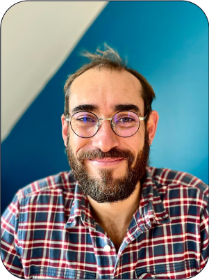

L’étiomédecine a pour vocation de soulager des mémoires de souffrances innées ou acquises à travers lesquelles les êtres appréhendent consciemment ou non la vie et leur propre dynamique au sein de l’existence. Ces mémoires sont comme des filtres posés entre nous et l’existence, distordant notre regard sur celle-ci. Le soin permet de nettoyer cette interface et contribue à « décloisonner » le patient. C’est alors qu’il retrouve ses libertés, lui permettant d’aborder la vie avec plus de justesse et potentiellement de se trouver. Le soin en étiomédecine n'est pas une technique que l'on dispense ou un protocole prêt à appliquer de manière automatique ou procédurale mais un accueil et un respect de ce que chaque patient ressent dans sa singularité, sans jugements ni conseils. C’est un traitement des libertés! Il permet aux patients de lâcher une par une les couches qui sont des freins dans l'expression de leur être. Le traitement passe essentiellement par le fait d’aider le patient à recontacter des ressentis physiques et émotionnels en lien avec des évènements ou des conditionnements, et à libérer les mémoires concernées. Pour cela, le praticien s’aide notamment des réactions du pouls du patient pour le guider pendant le soin. C’est le partage du ressenti, rendu possible par la présence affective et empathique du thérapeute, qui libère la charge de souffrance permettant alors aux symptômes (physiques ou psychiques) et aux fonctionnements qui en découlaient de se dissiper. Il ne s’agit pas d’expliquer les souffrances mais de les vivre et de les partager dans le ressenti, c’est ce partage qui permet leur dilution. Nous sentir reconnus nous permet de nous libérer, profondément et durablement.

Ostéopathe de formation et n’ayant jamais pu me satisfaire des concepts mécanistes qui m’ont été enseignés, j’explore en premier lieu les savoirs fondateurs de l’ostéopathie auprès de plusieurs formateurs et m’en satisfais un temps, sans pour autant mettre le doigt sur ce que je ressens. J’ai donc très tôt pris mon baluchon pour explorer de nouvelles voies et vivre de nouvelles expériences, intégrant peu à peu la vie en la ressentant, sans manuel. C’est lors d’une mission humanitaire en Amérique latine que se produit mon premier déclic. J’y constate à quel point je suis démuni face aux problématiques rencontrées (souvent issues de passés lourds) et j’en conclue que les outils à ma disposition sont trop limités. Cela confirme ce que j’ai toujours instinctivement perçu : la dimension affective a un impact considérable sur la santé et que je ne sais pas comment y accéder. Je traverse alors une longue période de doutes mais la rigueur m’incite à aller voir plus loin. C’est à mon retour en France que je rencontre l’étiomédecine, désireux de régler des problèmes de santé récurrents. C’est l’apparition soudaine d’une première fissure dans mes rigidités, et pour la première fois je me sens COM-PRIS, dans mon ensemble. J'en fus déstabilisé au départ, mais les verrous sautant un à un m'offrirent une percée de lumière dans un ciel d’orage, j’avais trouvé, c’était ça! Comme je n’ai jamais su nier les évidences, j’entame dans la foulée la formation auprès de Max Bernardeau en 2009 et j'ai tout de suite décidé que ce serait avec cet unique outil que je souhaitais accompagner les patients, en cohérence avec moi-même. Et puis avec Max… eh bien nous ne nous sommes plus quittés car je l’ai ensuite accompagné en tant qu’assistant dans ses formations. Maintenant à la retraite, il me transmet le témoin que j’espère humblement pouvoir emmener un petit peu plus loin. Je propose donc également des formations à l'étiomédecine, vous avez toutes les infos ici : https://www.etiomed.com/
DIPLOMÉ OSTÉOPATHE DO en 2008
à IDHEO NANTES
OSTÉOPATHIE BIODYNAMIQUE
avec B. JOSSE
OSTÉOPATHIE TISSULAIRE
avec P. TRICOT
PHYSIOLOGIE ÉVOLUTIONNISTE
avec M. GIRARDIN
ÉTIOMÉDECINE en 2009
avec M. BERNARDEAU
davidjegou.etio@gmail.com
Tarif des consultations : 75 €.
Site de de la formation en étiomédecine
Site de référencement des praticiens certifiés